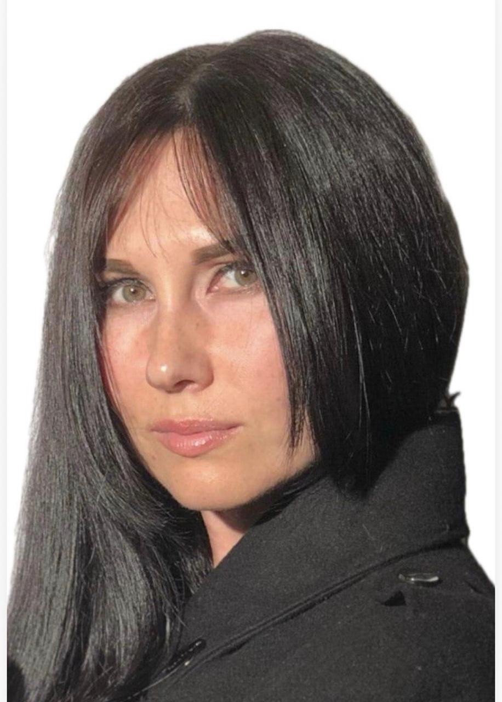
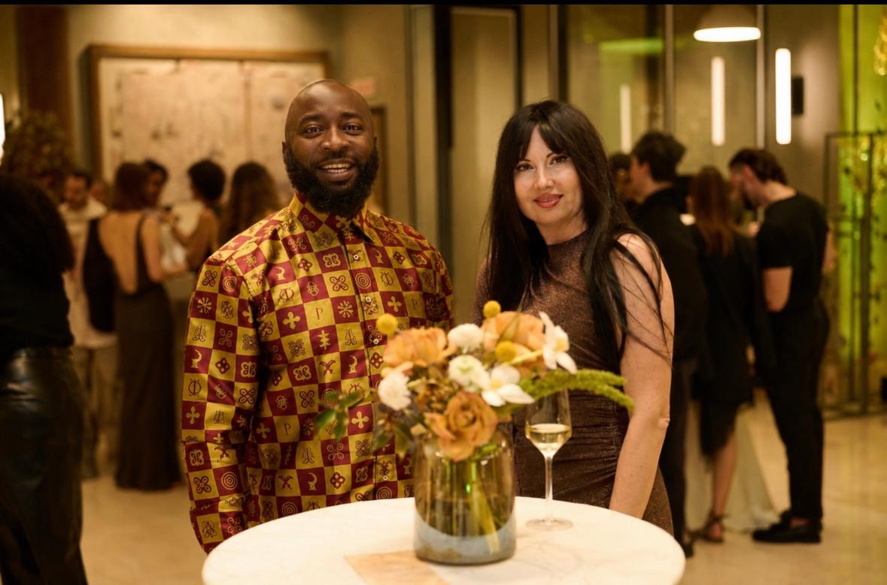

From 9 to 11 June 2026, Johannesburg became the centre of something genuinely new. The inaugural SA–Russia Trade Week brought together some of Russia's most sophisticated technology companies and activated them — for the very first time — inside the Studex Global Markets virtual agent ecosystem. This is the story of that week, those companies, and what it all means for the future of international business.
The Problem This Week Was Built to Solve
International business between Russia and South Africa has always had enormous potential. Russia has world-class technology across almost every sector that Africa urgently needs — advanced AI, data centre infrastructure, pharmaceutical manufacturing, precision genetics. South Africa has the access, the financial infrastructure, and the gateway position to reach 1.4 billion people across the continent.
But the bridge between these two realities has historically been fragile. Expensive intermediaries. Slow due diligence. Language and cultural barriers. A lack of permanent, structured infrastructure for bilateral commerce to happen consistently and at scale.
Trade Week 2026 was designed to collapse that barrier — permanently. Not a one-off event, but the activation of a permanent virtual space: the Studex Global Markets ecosystem, where companies from both countries can operate, connect, and grow together every day of the year.
What Is the Studex Global Markets Virtual Agent Cloud?
Before we tell the story of the companies, it helps to understand what they joined. The Studex Global Markets platform is built on three layers.
Layer one is the virtual space itself — the Studex Global Markets ecosystem, where the company directory lives, where matchmaking happens, where intelligence flows between participants. Think of it as a permanently open trade floor, accessible from anywhere in the world.
Layer two is each company's private Aesthetics Agent Cloud environment — powered by Aesthetics Global Markets Technology infrastructure. Every company that joins the ecosystem gets a dedicated, private AI workspace. This is not a shared cloud platform where data mingles. It is yours: secure, isolated, persistent, and intelligent.
Layer three is the Studex Super Agents — eight AI agents named after Renaissance masters, each one a specialist in a different dimension of business operation. Soul (your strategic Northstar). Obsidian Brain (your market intelligence layer). Dedicated Email (your outreach engine). And five compound agents handling content, partnership development, deal structuring, analytics, and market navigation. They run continuously. They learn your business. They compound their effectiveness over time.
Together, these three layers create something that has never existed before: a living, AI-native virtual country for international business. And on 9 June 2026, four companies crossed the border and moved in.
AfricaBiz: The Partnership That Made This Possible

Trade Week 2026 did not happen by accident. It happened because Natalia Mordvinova spent years building a bridge that most people said couldn't be built: a reliable, structured, commercially credible pathway between Russia and South Africa.
AfricaBiz (Pty) Ltd — her company, registered in South Africa and operating across Russia and global markets — is in the business of strategic partnership development. Its tagline, "Connecting New Horizons," is not marketing language. It is a precise description of what Natalia does every day.
She navigated the Russia side of this deal. She brought credible, serious, high-calibre companies to the Studex ecosystem. She ensured that when these organisations arrived in Johannesburg, they understood not just the opportunity in South Africa, but the permanent virtual infrastructure they were joining. Without AfricaBiz, there is no first cohort.

Tumelo Ramaphosa (Studex Global Markets) and Natalia Mordvinova (AfricaBiz) at Trade Week 2026, Johannesburg — the co-architects of the SA–Russia Business Exchange Programme.
"We didn't just bring companies to a room — we built the room itself. A virtual space where Russia and South Africa can meet, transact, and grow together for the long term."
— Natalia Mordvinova, Founder & Director, AfricaBiz (Pty) LtdWho Joined — and Why It Matters
The four companies that entered the Studex Global Markets virtual ecosystem at Trade Week 2026 were not chosen at random. They represent four of the most strategically important technology sectors for Africa's development trajectory: artificial intelligence, digital infrastructure, healthcare, and agri-genetics. Here is each company's story — and what joining the Studex ecosystem means for their work in South Africa and beyond.
NtechLab
NtechLab is the world's foremost facial recognition company. Ranked number one by NIST — the global benchmark for biometric accuracy — their flagship platform FindFace Multi can process 1.5 billion faces in 0.3 seconds. Their technology is deployed across 26 countries, monitoring over 500,000 cameras simultaneously.
South Africa is already a priority market. In April 2026 — just weeks before Trade Week — NtechLab activated their first South African deployment: an AI video analytics system inside a major Johannesburg shopping centre. The neural network analyses camera streams in real time, counting visitors, detecting queue build-up, monitoring compliance in service areas, and alerting management dynamically. NtechLab described this project as a pilot for broader South African scaling, with expansion discussions already underway.
Their presence in the Studex ecosystem accelerates this momentum significantly. With dedicated Super Agents identifying smart city, retail, healthcare, transport, and financial services opportunities across South Africa and sub-Saharan Africa — and a Aesthetics Agent Cloud environment that continuously builds their local intelligence — NtechLab now has the infrastructure to move from pilot to platform across the continent.
NtechLab's Super Agents are mapping the African smart city landscape, identifying government and enterprise procurement cycles, building relationships in the security and public safety sector, and generating the market intelligence that turns a successful pilot into a scaled commercial programme. Their Aesthetics Agent Cloud is the operations room for their African expansion.
ART Engineering MDC
Africa is chronically underserved in data centre capacity. As cloud adoption accelerates across the continent — driven by mobile banking, digital government services, AI applications, and the explosion of connected devices — the physical infrastructure to host this digital activity is simply not there yet.
ART Engineering MDC builds that infrastructure. They have deployed more than 50 data centres, all TIER III or TIER IV certified — the highest standards for mission-critical facility availability. Their modular data centre technology operates in extreme conditions: from -60°C to +60°C, making it uniquely suited to the diverse climate conditions across Africa, from Saharan North Africa to sub-equatorial Southern Africa.
The most remarkable aspect of ART Engineering's proposition for Africa is their deployment speed. While conventional data centre construction takes 18–24 months, ART Engineering deploys in 16 weeks. In markets where demand is growing faster than infrastructure can keep up, this is not just an advantage — it is a game-changer.
Inside the Studex ecosystem, ART Engineering's agents are identifying government digital infrastructure programmes, mapping hyperscaler expansion plans in Africa, building relationships with African development finance institutions, and structuring the commercial case for modular data centre deployment across 10 priority African markets. Their Aesthetics Agent Cloud becomes the command centre for African expansion.
Pharmasyntez Group
Pharmasyntez Group is one of Russia's most significant pharmaceutical manufacturers — ranked in Forbes Russia's Top 3 in 2025. With nine manufacturing plants (eight active, one under construction), 6,000 employees, and the capacity to produce 100 million pharmaceutical packages per year, they are operating at a scale that very few pharma manufacturers anywhere in the world can match.
Their African strategy is bold and precisely timed. South Africa — and Africa more broadly — faces a critical vulnerability: dependence on imported pharmaceuticals and diagnostic tools. The COVID-19 pandemic exposed this fragility definitively. Pharmasyntez is proposing technology transfer: real-time PCR diagnostic kit manufacturing, transferred from Russia to South Africa, enabling local production of high-priority infectious disease tests for HIV, TB, hepatitis, HPV, and respiratory infections.
This is not just a commercial play. It is a health sovereignty strategy. South African-produced diagnostics mean shorter supply chains, lower costs, faster responses to public health emergencies, and the development of a local biotechnology industry with genuine long-term value. Pharmasyntez has previously implemented this same technology transfer model in Italy — a proven blueprint now being adapted for South Africa.
The Studex Super Agents are navigating South Africa's pharmaceutical regulatory landscape (SAHPRA), mapping government health procurement opportunities, identifying manufacturing facility partners, and building the stakeholder relationships required for a technology transfer project of this scale. The Aesthetics Agent Cloud environment holds the full intelligence picture — updated continuously — so Pharmasyntez's team always has current, actionable intelligence on their South African opportunity.
Project Phoenix & GRM
Of all the companies at Trade Week 2026, Project Phoenix and their genetics partner GRM (Genetics and Reproductive Management) tell perhaps the most extraordinary story — and the one most deeply connected to Studex's own roots.
Project Phoenix is a conservation genetics initiative with an audacious goal: the de-extinction of the Northern White Rhino, a species reduced to two living females. In 2024, they achieved a verified IVF success with rhinoceros embryos — a genuine scientific milestone on the road to functional species revival. Their technology platform, SPonWeb, implements BLUP and GBLUP genetic algorithms — the same computational frameworks used in the world's most elite livestock breeding programmes — to manage breeding populations, optimise genetic diversity, and model long-term population viability.
The connection to Studex is profound. Studex was built on the premium livestock industry — Wagyu beef, Ankole cattle, animals whose value is defined by their genetics. Project Phoenix and GRM bring the most advanced livestock genetics platform in the world into an ecosystem that was built on exactly this understanding. Their tools serve not just conservation, but commercial livestock operations, game breeding, and precision agri-genetics across Africa's vast agricultural sector.
The Studex Super Agents are identifying commercial applications for SPonWeb in the South African game breeding industry, connecting Project Phoenix with conservation funders, wildlife organisations, and government partners, and building the commercial livestock genetics pipeline that could see GRM's platform deployed across Africa's premium beef and wildlife industries. This is the most natural partnership in the ecosystem — genetics meets the home that genetics built.
The First Cohort Is Proof. The Ecosystem Is Open.
Trade Week 2026 was not a conference. It was not a networking event. It was an activation — the moment at which years of infrastructure building became a live, operational ecosystem.
Four companies, across four sectors that define Africa's developmental trajectory, are now operating from their own dedicated Aesthetics Agent Cloud environments inside the Studex Global Markets virtual agent cloud. Their Super Agents are working. Their intelligence is compounding. Their South African presence is being built — not through expensive, slow conventional market entry, but through intelligent, persistent, AI-native business development that never sleeps.
And the invitation is open for the next cohort. Studex Global Markets was built to welcome companies from any country, in any sector, at any stage of international market development. The model is proven. The infrastructure is live. The ecosystem is growing.
"Studex is celebrating a decade of registration and over 14 years of AI development. Trade Week 2026 is not the beginning of the story. It is the moment the story became visible."
— Tumelo Ramaphosa, Founder, Studex Global MarketsThe virtual room is built. The companies are inside. The agents are running. South Africa and Russia are connected — permanently, intelligently, and at scale.
If your company operates internationally — or wants to — the Studex Global Markets ecosystem is the infrastructure you have been waiting for. Join the next cohort. Let the agents do the work.
Join the Next Cohort
Be part of the Studex Global Markets virtual agent ecosystem. Your dedicated Aesthetics Agent Cloud. Your Super Agents. Your permanent South Africa–Russia market presence.
Register Now →